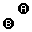

Press escape to open the menu where you can view or change controls and restart the game. The game provided is a combination of multiple Game Boy Advance games made using agb, you can press left or right on the main menu to switch game.